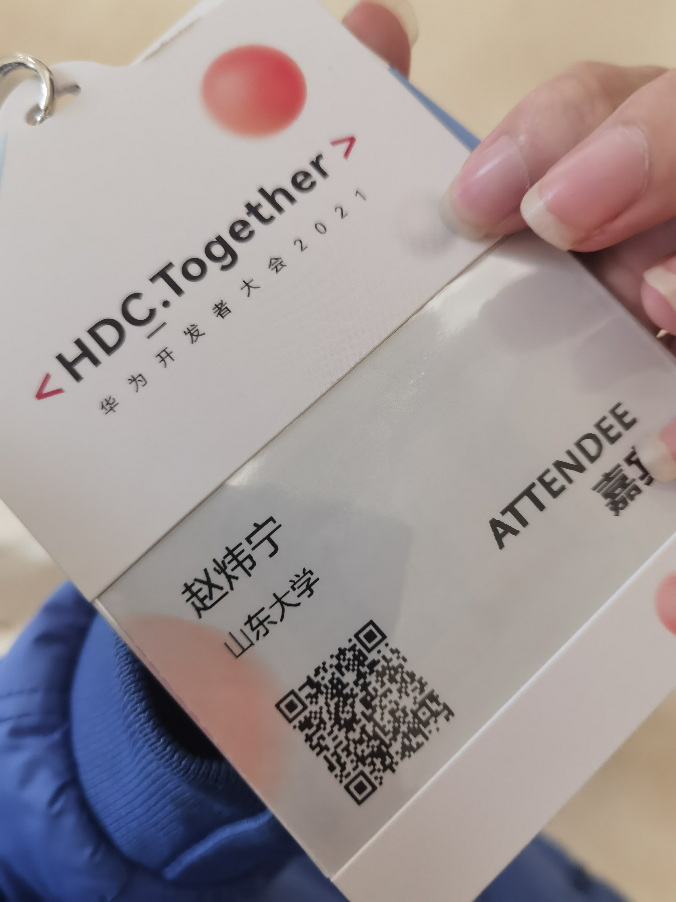

我的2021华为开发者大会
前言
有一说一真的没有想到今年能有机会参加这次盛会，真的是惊喜。
作为一名开发者，一名安卓开发者，一名资深（大概）花粉的安卓开发者，能够来到华为在东莞的小镇真的是万分荣幸。
来之前也想过好多，对未来的规划也好，对知识的期许也罢，其实都是满满的期待罢了。
历程
The first day
飞机加入住手续，虽然有些繁琐，但是疫情之下还是要保护好自己。

在酒店里体验了一把智能家居，真的感受到了万物互联的一些魅力与便捷。
The second day
一大早起床来到三丫坡签到，虽然有些迷糊但还是很激动。
进入活动会场（好大）


然后就跟大佬们一起去做codelabs，上手体验华为各种开放能力的开发。其实感觉codelab还是蛮简单的，不过第一天不太熟悉，像个没头苍蝇一样乱撞，体验到了一些自己感兴趣的能力，尤其是一些我比较熟悉的HMS相关服务，不过也挑战了特别多几乎没有接触过的知识，比如3D建模能力，sense渲染能力，HIAI开放能力，甚至现学华为推出的eTS（extended TypeScript）语言然后现卖（指修bug），了解了一些前端的最新的开发规范，甚至受现场的一位老师邀请当了一波特邀观众，听了他对鸿蒙开发的演进过程的分析以及现阶段鸿蒙的优势，其中的思想真的值得我思考。
eTS确实用更少的代码，更低的门槛，解决了传统安卓命令式代码的许多问题，而且耦合度也没有太大区别。安卓原生开发的命令式代码与视图跟逻辑分离的思想固然是好，但同时造成了大量代码冗余和更复杂的代码结构，而eTS的声明式编程则在很大程度上解决了这一问题。
codelab：

做的是HMS的账号服务，我一说这个我做过结果引来了三位老师来指导讲解（雾）
然后还领到了证书，哎嘿嘿，感觉这张照片照的挺好的，就放上吧。
中午跟大家一起吃了饭，下午大家听了公司HR等大佬的一些讲座，还很荣幸地在现场领到了布道师证书和奖杯，并且接受了采访，2333。
星光不负赶路人，愿携手前行。
晚上大家一起聚餐，聊得特别开心，（小助手疯狂输出），不过没有留照片，就不放了，2333。
The Third day
第三天大家一起拍了很多照片（当然第二天也拍了很多）我就一起放几张吧


拍了照去做了一会儿codelab，顺利了很多，体验了很多想体验的服务，虽然只做了一个小时就去听鸿蒙公开课了，不过在做codelab的时候也跟大佬们聊了很多技术问题，收获了 许多知识和思想。
鸿蒙公开课让我收获颇丰，我在这里发现了更加优质的资源，但令我感触最深的还是讲到的学习鸿蒙的正确姿势，一种技术，如果我们按照从语言到实操的路程去学习，真的很容易从入门到放弃，但如果先从demo入手，边看边学，就能实时地获取到自己的学习反馈，学习历程也会更轻松更自信。
两天下来发现两个背包都装满了（雾）。
写在最后
我总觉得，在某些方面，学校所能提供的还是太少了，这并不是学校不认真负责，而是说本就囿于象牙塔的束缚，学校能尽力为我们提供的是知识，但却很难让我们看清行业实时动向与现状，尤其是在疫情当下，与外界交流减少，更加加剧了这一局面。我们真的需要走出去，去看一看，学一学，了解一些对我们未来发展有指导性的思想与知识，了解一些行业的痛点与现状，了解一些尖端的技术与能力，其重要性并不亚于对课程知识的学习。
这一年，我从安卓走向了跨平台（cross-platform），又从跨平台开始了解跨终端，历史的发展总是这样，我们希望我们身边的设备，不是一个个孤立的设备，更不应该是每个设备都有自己一套体系而且互相难以兼容的孤立设备，我们所追求的，是让我们使用身边的每一个设备的时候都能像使用自己的双手一样自如。
诚然，平台与平台之间的隔膜还很难被打破，但设备与设备间的互联却很容易完成，但我们亦不能止步于“联”，更应考虑“智”，如何让设备之间看上去像是一个整体，如何能让用户在设备之间无缝切换，如何能让设备去学习推测主人的意志从而自动地完成服务，如何能让用户去更快地习惯并接受这种生态，各种技术要处于怎样的地位、发挥怎样的能力，究竟哪些技术会被逐渐抛弃、哪些技术会渐渐兴起，这都是我们要考虑的问题，也是行业要考虑的问题。
此外，从万物互联到万物自联、智联，华为的努力和成果有目共睹，但我们并不会止步于此。星辰之光虽然微弱，但亿万星辰亦可汇成银河，未来，我们在路上。